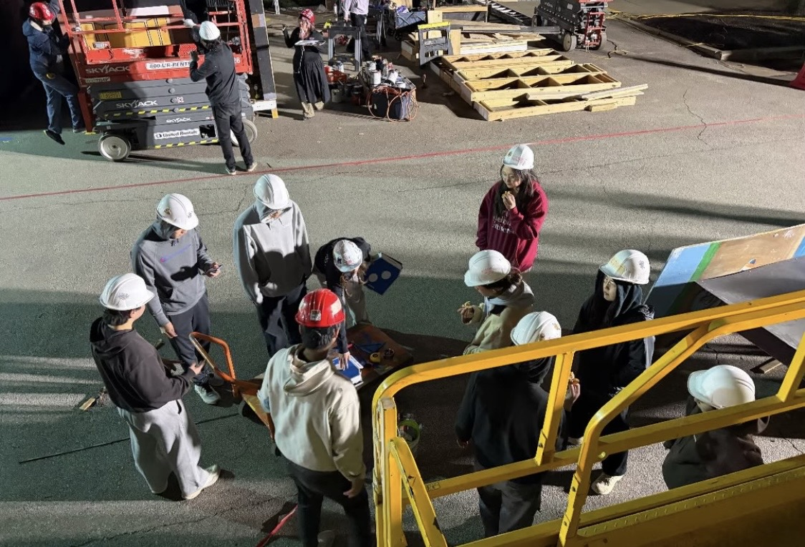
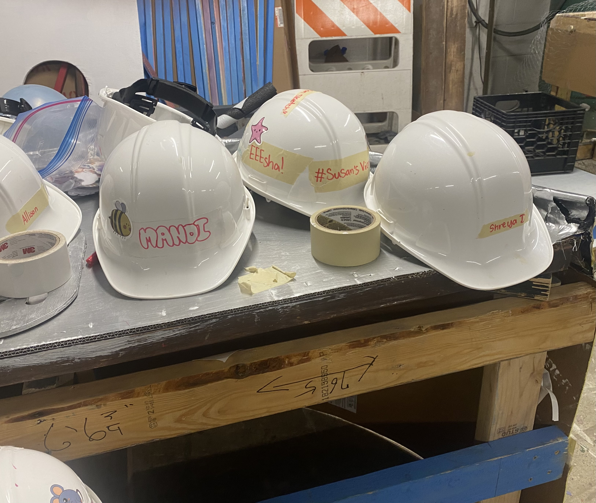
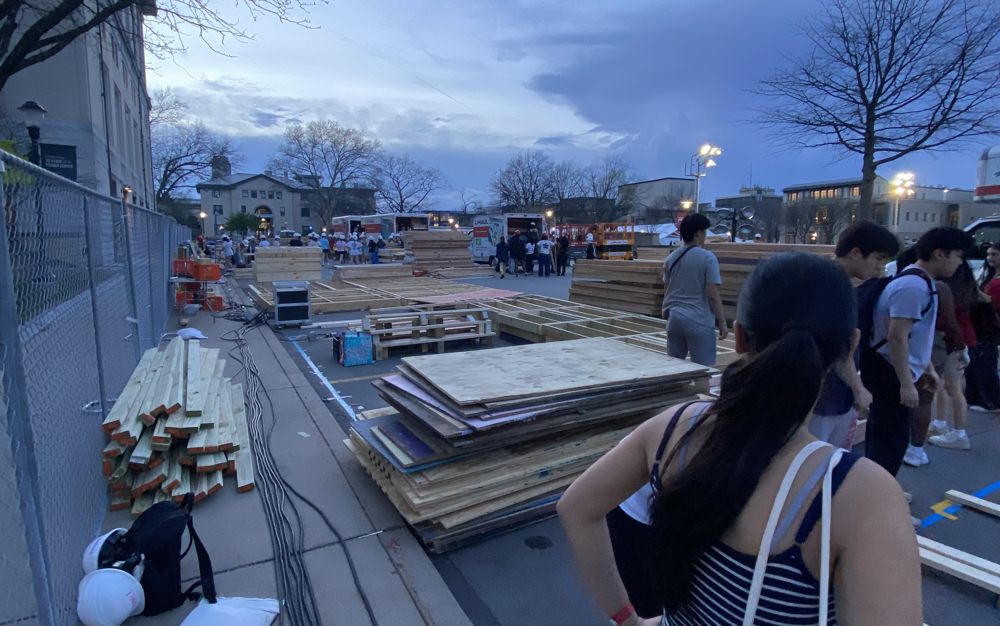

CMU Asian Student Association 2025 Carnival Booth
A collaborative, two-story architectural installation built by Carnegie Mellon University's Asian Student Association for the 2026 Spring Carnival. Working alongside a team of approximately 30 students, my work included building walls and floor panels, painting walls and three-dimensional scenic elements, and assisting with some of the electrical work.
Academic Year: 2025–2026
Organization: Carnegie Mellon University Asian Student Association
Theme: K-Pop Demon Hunters
Award: First Runner-Up, 2025 CMU Carnival Booth Awards
Project Description
Every spring, Carnegie Mellon University organizations compete in Spring Carnival to create the most impressive booth: a full-scale, immersive structure designed and constructed by students. These booths go far beyond traditional displays, incorporating architectural construction, elaborate scenery, sculptural elements, painting, lighting, and electrical systems into cohesive, walk-through environments.
The Asian Student Association's 2025 booth was a two-story structure inspired by K-Pop Demon Hunters. Nearly every aspect of the building, from its wall panels and flooring to its painted set pieces, electrical systems, and safety considerations, was planned, built, and coordinated by members of the ASA Carnival Booth team.
ASA 2025 Booth Walkthrough
Video originally taken from the booth's Instagram and subsequently modified by me.
Behind the Scenes


